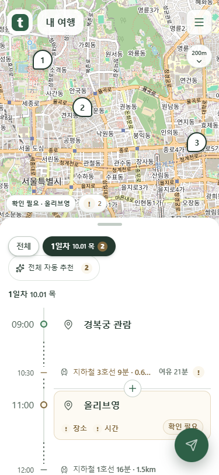
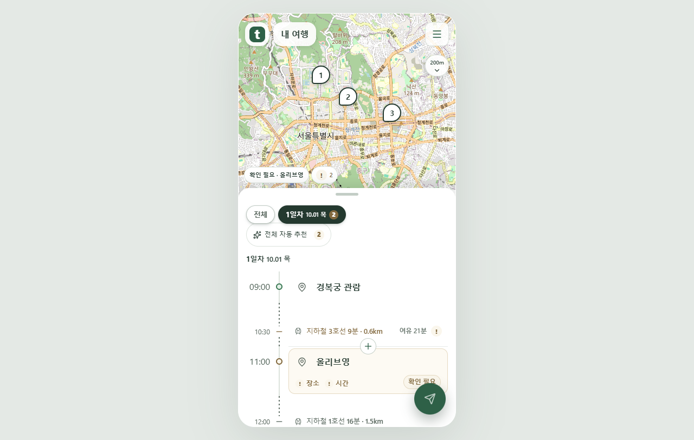

날짜는 제자리, 그림자만 은은하게
위아래 이동을 없애고 손잡이 아래 간격을 확보했습니다. 날짜 글자와 버튼은 고정하고 그림자의 농도만 천천히 바뀝니다.
새 움직임 · 실제 화면 12초
날짜는 4초, 추가 가로선은 3초 주기입니다. 마우스·키보드 초점에서는 멈추며 움직임 줄이기에서는 정적으로 표시합니다.
손잡이 아래에서 고정
날짜 탭 상단과 손잡이 사이10px, 스크롤 영역 안쪽12px 그림자 여백을 확보했습니다.

375px 실제 Chrome 화면
1280px 실제 Chrome 화면